|
Приветствую всех! Давненько не писала. Однако через пару месяцев уже наступит Рождество, - стало
быть, следуя традиции описывать события через полгода по их происшествии,
пора браться за клавиатуру. Я бы, конечно, еще месячишко-полтора помедлила, но внезапно появившиеся
письма Марины и Саши об их замечательно проведенном отпуске, равно как
и их напоминания о том, что наш отпуск все еще засекречен, придали мне стимул.
Писать в общих чертах Всевышний мне не дал таланта. Поэтому начну по порядку…
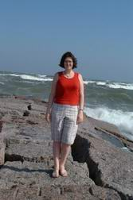
Сестренка моя Ольга должна была вот-вот отправиться из Голландии к своему мужу Артему в город
Хьюстон. Артем туда прибыл, получив годовой контракт. Работает в исследовательском
институте. Генетик по образованию, доктор по степени, ставит ошеломительные опыты над ни в чем не
повинными дрозофилами. Впрочем, может, насчет их неповинности я сильно сказала,
потому что все моИ опыты над надоедливыми самовыводящимися мушками сводятся к тому, чтобы побыстрей
прикончить их, в чем, надо сказать, гораздо больше преуспевает наш кот Гэндальф.
Ольга тоже доктор. Находясь в Голландии в 3х-месячной командировке, она, не теряя времени даром,
списалась с неким профессором из Хьюстона, чья лаборатория занимается абсолютно
тем же, чем Ольга. Ольга, спешу заметить, занимается физиологией, проводя депрессивно-агрессивные
опыты над несчастными мышками.
Недавно прибывшая из Новосибирска в Торонто Ольгина коллега по лаборатории Таня поведала мне, что
изучает на мышках шизофрению. Это хорошо, - из глубины своих мыслей заметила я, -
наверное, скоро я к тебе обращусь...
Техасскому дядечке-профессору, в свою очередь, край как понадобился именно такой работник, как
Ольга. Так что Ольга уже летела в Хьюстон не просто как жена Артема, но и как
долгожданный доктор-сотрудник.
На деле, правда, не все обстояло так радужно. Прежде чем вступить в новую должность, нужен был некий
"американский идентификационный номер" (Andrew: SSN - Social Security Number),
без которого якобы людей не имеют права брать на работу, и уж тем более, несмотря на "огромное"
желание, не могут платить им зарплату. Так что Ольге пришлось прокантоваться 3
месяца (в тренажерных залах и бассейнах), пока ее не допустили к работе.
Но вернемся назад... Нас с Андрюшей давненько преследовала мечта изъездить Америку на машине. Одно
дело на самолете лететь. Удобно, конечно, комфортно, раз и в точку.
Поприсутствовал, понаслаждался, - бах, и обратно дома. Но в том-то весь и кайф, что хотелось воочию
узреть американские ландшафты, природу, людей, и просто интересно было бы
понаблюдать, как это все от мили к миле (ибо там у них мили, черт возьми, не километры) изменяется.
На самолете ты сразу уже попадаешь в некий жилой пункт, массив небоскребных
строений. Ты видишь только сам город. Но все большие города... "похожи друг на друга",.. а вот что
лежит за их окраинами, известно только обитателям тех самых окраин.
Мы собирались поехать на машине в Калифорнию. Не ближний свет, конечно, но, как известно, бешеной
собаке сто верст не крюк. Узнав, однако, что на днях Ольга вылетает в Хьюстон,
мы резко изменили свои планы, однозначно порешив, что отправляемся в Техас. Родители мои еще
навещали нас, а вот сестренку я не видала уже 3 с лишним года. Южнее штата Техаса
только Мексика, следовательно нам предстояло пересечь всю Америку.
Мой супер-технологично-предусмотрительный муж не замедлил заняться исследованиями относительно...
навигационной системы. Путь не ближний. Надо тщательно все спланировать и
беспрекословно следовать запрограммированному заранее курсу. Отклонения вправо-влево грозили нам
большим количеством дней на дорогу и меньшим - встрече с родственниками.
В "навигационных" целях на пресловутом е-Бэе был приобретен малюсенький ноутбук Toshiba Libretto,
размером с самую что ни на есть обыкновенную видео-кассету, а также навигационный
прибор, принимающий сигналы со спутника (Andrew: GPS receiver, в нашем случае - Garmin e-Map
GPS). Прибор кладется далеко под переднее стекло машины, так чтобы ничто не преграждало
спутниковым лучам достичь чудо-устройства, а лаптопчик прикручивается приблизительно туда же.
Специальная программа с детализированной картой вселяется в его недра (Andrew:
Microsoft MapPoint 2002 и к нему AGPS plug in - Advanced GPS, написанный каким-то парнем из Японии,
которому я честно заплатил $10 : ). Таким образом, когда навигационный прибор
напрямую связан с лаптопом, последний кажет карту, на коей точечкой изображает настоящее
местопребывание объекта, то бишь машины. Поскольку же машине свойственно время от времени
передвигаться в пространстве, то путь наш рисовался в программе дискретными зелеными точечками,
несмотря на то, что двигались мы, по мере возможности, непрерывно. Непрерывною
зеленою линией представал запрограмированный заранее путь. Если кому-то что-то удалось представить
из данного описания нашей навигационной системы, то он сразу поймет, что как
только рисующиеся точки начинали идти вразрез со статической зеленой линией, пиши пропало - сбились
с пути.
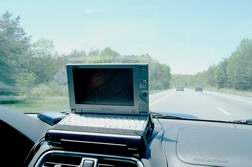
Андрюша легко прилепил компьютер и навигационное устройство к специальной подставке (Andrew:
подставку я самолично изготовил из пластикового планшета для бумаг :) с помощью
зип-лент (наподобие, как бывают в кроссовках), так что ноутбук стоял открытым неподвижно. Технология
продумывалась Андрюшей очень тщательно, все детали обсасывались до мелочей.
В конце концов, вся система была водружена на переднюю панель машины так, что совершенно не
заслоняла водителю обзора, в то же время удобно показывая экран как рулевому, так и
штурману одновременно. Ух.... Нелегкое это дело - описывать технические приспособления. Ежели чего
не так, нехай Андрюша просвещает.
Как приличные люди, мы выждали ровно неделю с момента встречи Артемом Ольги, после чего взяли
отпуск. Ранним майским утречком... мы наконец-то завершили упаковку вещей и гостинцев
и со спокойной совестью... отошли на покой. Часа в 2 дня, самый разгар час-пика, двинулись в сторону
Соединенных Штатов.
Самый короткий путь от Торонто до Хьюстона занимает двое суток с учетом ночевок. Но мы решили
воспользоваться им по дороге обратно. В Техас же был смело проложен маршрут через
Апалачи! Из-за вынужденного крюка дорога занимала все 3 дня. Видимо, траектория выглядела бы еще
более изгибистой, а путь соответственно дольше, проедь мы на самом деле через
горные хребты. В реальности же мы миновали лишь подножия Апалачей, что, однако, нисколько не вызвало
у нас разочарований.
За остаток первого дня пути нам удалось пересечь 3 штата: Нью-Йорк, Пенсильванию, Огайо, - после
чего мы упали на ночлег в большом городе Цинцинатти 4-го по счету штата Кентакки.
Все огромные американские города очень красиво смотрятся по ночам: всюду огоньки, мерцания,
разноцветные подсветки высоких башнеподобных зданий. Красота! Одною красотою, однако,
сыт не будешь, а кушать хотелось просто страшно. Это в Европе ночь мало чем отличается ото дня. В
Париже мы регулярно намыливались в ресторан часа в 2 ночи, причем выбирали, как
правило, первый попавшийся. В Америке по ночам люди обычно спят, и все рестораны, кафушки и
забегаловки закрыты. Работают лишь сугубо специализированные заведения типа ночных
клубов, казино и... заправок. Казалось бы неудивительно то, что заправки функционируют
круглосуточно. А как же иначе? Не спать же людям в машине с опустошенным баком где-нибудь
посреди дороги. Вопрос весь в том, КАКИЕ в Штатах заправки! Это просто палочки-выручалочки. Там
можно купить все самое необходимое: и наесться, и напиться, обкуриться и забыться, -
не говоря уже об огромном ассортименте аптечных и других промышленных товаров. Для нас не было
секретом, что в американских аптеках можно купить все, включая сигареты и пиво, но о
том, что заправки по совместительству являются теми же аптеками, мы не предполагали. В общем, через
15 минут затаренные консервами, пицей и алкогольными куллерами, мы направлялись в
номер гостиницы Ramada Inn.
Отели мы заранее не заказывали, решив, что будем останавливаться на ночь, где понравится и когда
захочется. И совершенно правильно сделали, ибо в противном случае нам пришлось бы
строго привязываться ко времени и определенным местам, стали бы нервничать, переживать, что не
успеваем. Да и кто его знает, что там за места. Опять же сегодня, например, мы
способны рулить полночи, а завтра вдруг устанем, захотим отойти на покой пораньше. И гораздо
интереснее так, спонтанно. Проблем с номерами за все время нашего пути ни разу не
встречалось. Гостиницы мы выбирали на окраинах больших городов, там они кучкуются пачками: отели,
мотели, инны. Вроде еще и город, но уже тихо и спокойно.
Ужин удался на славу. Вначале омрачало то, что забыли в заправке-аптеке прихватить столовые приборы,
но потом плюнули на приличия и с удовольствием слопали консервы голыми руками,
запивая их легким прохладным алкогольным напитком. Все-таки классно, когда можно купить спиртное где
угодно и когда угодно. В нашем Онтарио приходится в корне подавлять порочные
желания, если не дай Бог приспичит пропустить стаканчик на сон грядущий. Или затариваться заранее,
что мы и делаем.
По утрам в отелях предлагается мини-завтрак, состоящий из каких-нибудь засохших печенюшек, соков и
кофе. Не фонтан, конечно, но до обеда потерпеть можно. Обедали мы с Андрюшей в
ресторанах. Хоть раз-то за день нужно нормально поесть. Ну а ужинали ассортиментами заправок.
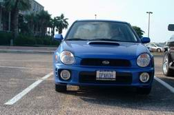
Кстати, сидя в одном из ресторанов где-то посреди Америки, мы услышали, как молоденькие
парнишки-официанты возбужденно переговариваются между собой:
- Слышь, там на паркинге чья-то Subaru WRX стоит! Круто!
Ничего особенно крутого в моей машинке нет (кроме стада лошадей, полного привода и взрерывающей
"ракетной" турбины). В конце концов, это не бимер, не Ауди и даже не мерс (да
простят меня владельцы Мерседесов!). Мой муж говорит, что это - по-истине пацанская тачка. Для тех,
у кого денег чуть больше, чем на распальцованный Civic, оснащенный
дополнительными фарами, крыльями, нижней подсветкой и грохочущим двигателем. В Канаде, как и на
севере Штатов, подобного рода тачки (не цивики, - нормальные тачки) людей мало
удивляют. Но чем дальше продвигаешься к югу, тем машины у народа все проще и проще.
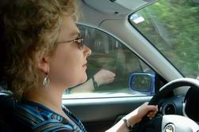
Поутру за баранку села я, и мы тронулись дальше на юг. Кстати, в Цинцинатти теплые кофты пришлось
уже снять. Дело в том, что, отправляясь из Торонто, мы разве что шубы не надели.
Несмотря на май месяц, дубарина стояла страшная. Прикольно наблюдать, как с продвижением на юг
становится все теплее и теплее.
Миновали Кентакки и въехали в Теннесси. Что за красавец этот штат! Во-первых, ограничитель скорости
наконец-то сменился на 70 миль в час. Всюду до этого было 65. Во-вторых, там
уже явно тепло и зелено. В-третьих, - горы! Мы почему-то считали, что Апалачи нас встретят в
Алабаме. На самом же деле вся горная дорога выпала на Теннесси. Такая красота кругом!
Такая интересная дорога! Андрюша сразу же начал ныть, завидуя моему шансу погонять на подобной
трассе. Непрерывные пороворы влево-вправо, крутые виражи, изгибы, сама дорога то
резко поднимается ввысь, так что уши закладывает, то уходит в низину (Andrew: на самом деле
никаких особенных виражей там не было - ну какие виражи на хайвее? Но хотя-бы ехали не
по прямой, как стрела, дороге, и то хорошо). На Субаре перепады давления тоже заметно
отражались. На резких подъемах в гору турбина ревела яко лев, тяжеловато ей было дышать
разреженным воздухом (Andrew: хмм, тяжеловато - это слегка преувеличено. На самом деле мы начали
замечать изменения в поведении двигателя только где-то сильно на юге - в районе
Луизианы. Раскаленный и влажный воздух нашей турбине не слишком понравился :). Короче, могу
сказать, что проезд по теннессинским хайвеям дал мне больше драйверского опыта, нежели
ежедневное трехлетнее вождение. Главное, я ничего больше не боюсь. Ни поворотов, ни скорости, ни
вождения одной рукой, ничегошеньки. Не сказать, чтоб я и раньше сильно боялась.
Мне всегда хотелось уметь водить машину круто, профессионально, с примесью адреналина, но я всегда
осторожничала, явно понимая, что желания мои идут вразрез с реальными
возможностями. Недостаток опыта, неуверенность в себе и все такое... После Теннесси подобные задвиги
как рукой сняло. Андрюша вообще расслабился до неприличия, взирая на мои
прогрессивные скачки на поприще вождения. Если раньше он метра не мог высидеть, чтобы не сделать
комментария или нравоучения, то сейчас дрых себе всю дорогу. Откинет креслице,
книжечку почитывает, облачками любуется, фотоаппаратом окрестности пощелкивает. И нет ему дела до
моих виражей. Просыпался лишь, когда к очередному городу подъезжали. Там, на
многочисленных хайвейных развязках требуется нехилое штурманское умение, дабы на правильной дороге
остаться.
Кстати, о лимитах. Всем понятно, что их мало кто придерживается. В основном люди едут километров (Andrew:
все-таки наверное миль, а не километров? - в штатах-то? :) на 10 в час
быстрее и с нетерпением ожидают колебаний воздуха, производимых каким-либо спиди-гонзалесом. Едва
успеет сей джигит тебя обойти, ты тут же садишься ему на хвост и несешься в
унисон с его скоростью. Хорошо, если сзади тебя тоже кто-нибудь пристроится. Таким образом, ты
оказываешься защищенным с двух сторон. Первый имеет риск попасться притаившейся за
пригорком полиции, у тебя же будет время притормозить. А последний может быть замечен откуда ни
возьмись возникшим полицейским сзади. Понятно, что страж дорожного порядка погонится
за тем, кто первый с конца. Так люди и ездят. (Andrew: нет полнога счастья в жизни, иногда даже
наличие ведущего и ведомого не помогает - полиция может остановить всю толпу сразу :)
Интересно то, что чем ближе к югу, тем все менее народ приучен к тому, что некто может сесть на
хвост. Чем южнее, тем люди все медленнее и варенее. А отдельные быстрые пацаны
привыкли считать быстрыми только себя и начинают чувствовать себя не комфортно, если их кто-то
пасет. Так, в Луизиане Андрюша часа 3 играл в догоняшки с одним корветом. Тот всячески
пытался от него оторваться. Уж и трюки всякие придумывал, за траками скрывался. Но от настырного
Андрюши трудно уйти. (Andrew: теоретически, он мог легко от нас оторваться по
прямой, все-таки у корвета лошадей под капотом - нехилый табун. А практически - при наличии трафика
и необходимости маневрирования на скорости 170-180км/ч никакого преимущества
корвет перед нашей Subaru WRX с 231 лошадями, не имел. Так что покатались мы с ним всласть :) Да
еще вэн какой-то пучеглазый, отчаянно пыхтя, старался поспевать за нами.
Корветовский водила совсем запаниковал. На узком мосту он таки пролез в маленькую дырочку между
машинами, и больше мы уже его не видели (Andrew: ну, кто не видел, а кое-кто и
успел заметить, как он ушел с хайвея на ближайшем выходе :). Куда легче в северных штатах и
Канаде! Здесь сидеть на хвосте у гонщиков - святое дело. Уже по дороге обратно,
в штате Мичиган я уцепилась за всех расталкивающим на своем пути джипом. Ну очень быстрым джипом.
Потом в результате локального скопления машин я несколько отстала от ведущего.
И тут воскресший ото сна Андрюша, словно учуяв ситуацию, как ванька-встанька принял вертикальное
положение и принялся возбужденно вопить:
- Догоняй его! Догоняй! Уйдет ведь!
Обратив внимание супруга на спидометр, где стрелка красовалась чуть пониже 200 км/ч, я осторожно
спросила:
- Все еще догонять?
- Конечно, догоняй! У тебя все равно еще нет ни одного тикета...
Добрый малый, не правда ли?
Вторую ночь провели в мотеле (не то "Super-7", не то "Super-8") городишки Меридиан штата Алабама.
Здесь уже жара неописуемая. И повышенная влажность. Как в настоящей русской бане.
Алабама своим восточным боком плотно упирается в штат Georgia, где, как мне рассказывали очевидцы,
вообще можно сдохнуть, если не принимать мер предосторожности от жары. Мой хороший
друг Виченсу имел счастие проживать в Атланте, и один раз во время велосипедной прогулки его хватил
солнечный удар. Несчастный плохо понимал, что происходит, но изо рта у него шла
пена. Еще он рассказывал, что там обитают гигантские насекомые, - одной только гусенице понадобится
весь Ваш лоб, дабы комфортно расположиться. Боюсь, Виченсу это заметил, когда,
лежа на травке, приходил в себя.
Мы еле дождались, пока зайдем в номер и наконец-то стащим с себя теплые и мокрые одежды. В машине-то
оно терпимо, кондиционер на всю катушку работает, но когда приходится вылазить
наружу, заправляться, например, то чувствуешь себя просто ужасно. На сей раз мы приобрели
одноразовые ложки, дабы относительно культурно изничтожать консервы. Одна беда, - меня
угораздило выбрать консерву с устрицами, обычную плоскую, закругленную жестяночку. "Устрица - курица
моря!" - аппетитно взывала надпись на банке. Это ж надо обладать столь буйным
воображением, чтобы в морской бекарашке углядеть сходство с домашней птицей. Я вроде на свое никогда
не жаловалась, но чтобы на ум пришло подобное сравнение,.. - я столько не выпью.
Казус состоял в том, что создатели забыли сделать в жестянке крышку с ручкой для открывания, какие
бывают на всех других консервах подобного типа и баночках с лимонадом и пивом.
Так уж мне было обидно! Консервных открывашек в номере нет, администрация спит, Андрюша, как назло,
забыл свой ножичек, некогда привезенный ему Артемом из Швейцарии. Ну как открыть?
В голове крутился только эпизод из давнего фильма "Спортлото-82", - треснуть хорошенечко обо
что-нибудь, чтоб уж совсем расплющило ее, окаянную. Так ничего и не придумав, я
довольствовалась сардинами, а устрицы бросила в сумку. По моей забывчивости, им предстояло пролежать
до самого Торонто, благо, они законсервированные. Осушив пару куллеров, я
направилась за дверь. Андрюша отходил ко сну, а мне захотелось еще маленько постоять на террасе,
подышать по-истине теплым воздухом после затянувшейся холодной Торонтовской весны.
В комнате двумя дверьми левее происходил какой-то балаган. Ребята гуляли. Выпивали, ржали, орали
истошными голосами и почему-то поочередно выскакивали на террасу с обмотанными
вокруг чресел полотенцами. "Да, вот бы в Торонто вы сейчас так повыскакивали," - почему-то
пронеслась мысль. Один из них, единственный без полотенца, э... в смысле, в штанах,
завидев меня, подошел поближе. Разговорились. Спросил, откуда меня принесло. Из Торонто, - отвечаю.
То-то, говорит, я чувствую, какой-то странный акцент у тебя. Нездешний. Да нет,
говорю, в общем-то у коренных канадцев с акцентом все в порядке (хотя, конечно, в каждой местности
существует свой собственный диалект), просто, очевидно, мой акцент тронут еще и
русским происхождением. Сказала, что изначально я из России, из Сибири.
- Откуда из Сибири? - подозрительно спросил парень. Кстати, при ближайшем рассмотрении, парень он
был уже довольно-таки престарелый.
- Из Новосибирска, - бросила я, совершенно не предполагая, что последует за моим ответом. Шквал
эмоций собеседника по мощности мог сравниться с вулканичечким взрывом:
- Из Новосибирска??!!! Да ну??!! Моя подруга живет в Новосибирске!!! Я ее никогда не видел, но мы с
ней регулярно переписываемся по интернету. Не могу поверить!
Вот так совпадение! Из Новосибирска! - и все в таком роде. Можно было подумать, что парень
удостоился, как минимум, аудиенции английской королевы, или сама Клаудия Шиффер снизошла
до него. Ну, наконец, словно он встретил не меня, а ту самую свою новосибирскую подругу. Я с ужасом
подумала, что еще секунда, и он примется меня обнимать и расцеловывать. Но в
следующую секунду парень помчался звать своих полуголых недоумков, дабы похвастаться своей редкой
находкой в моем лице.
- Представляете? Она - из Новосибирска! Из Но-во-си-бир-ска!
Парни, видно, в первый раз заслышав это слово, недоумевающе поглядывали то на сотоварища, то на
меня, но на всякий случай представились. Через пару минут, когда эмоциональный
фонтан моего нового знакомого начал утихомириваться, я, сославшись на усталость, извинилась и,
покинув шумную толпу, потелепала восвояси под теплый мужьин бок. Завтра вечером мы
будем уже в Хьюстоне... В Хьюстоне??!! Да ну??!! Не могу поверить!!!
Кстати, о диалектах... Действительно, заметно, как от штата к штату изменяется диалект, на котором
изъясняются местные жители. Особенно в провинциальных городишках. Где растягивают
гласные, где, напротив, беспощадно проглатывают их. Разные манеры, разное поведение. Мы и
наблюдали-то это, только когда останавливались на обед или на ночлег. Рестораны днем
наполняют в основном бабушки, иногда еще и дедушки, ну иногда еще с внучатами. Остальное население в
это время либо работает, либо учится, либо прозябает в детских садах, ибо
большая часть американских бабулек не очень-то любит цацкаться с детями. Вот и собираются такие
подружки в культурных точках принятия пищи, сплетенки травят. Едва мы появлялись
в подобных заведениях, на нас сразу же глазели, старательно делая вид, что всецело поглощены своими
разговорами. Видно, мы как-то выделялись из толпы. Редко какого туриста
занесет в провинциальную глушь, разве что таких автомобильных маньяков, как наша чета. Вот мы и
казались им диковинками. По лицам некоторых обитателей было хорошо заметно, что
сильно далеко за пределы своей деревни они никогда не выезжали. Мы, в свою очередь, уминая обеды,
судорожно пытались понять, чем люди в этих населенных пунктах занимаются, что
делают, чем живут. Кстати, меня всегда прикалывает стандартный по здешним меркам вопрос: What are
you doing for living? Типа что ты делаешь, чтобы прожить?
На следующий день, въехав в Луизиану, мы решили сделать загогулину, дабы отметить своим скромным
визитом знаменитый Новый Орлеан. Приближался обеденный час, и мы искренне
размечтались романтично отобедать в каком-либо орлеанском ресторане на берегу океана. Но едва мы
очутились в бурной городской черте, как наш навигационный бортовой компьютер
дал сбой (Andrew: Ха! Сбой! Да у него температура процессора поднялась до 80 градусов, и он
просто автоматически отключился. Я же не догадался заранее включить обдув переднего
стекла, чтоб и ноутбук слегка охлаждался.), в результате чего мы целый час кружились по
многоэтажным эстакадам в плотном, но быстром трафике, пока нас не вынесло куда-то на
окраину города (Andrew: кружились мы там вслепую ровно до тех пор, пока наш компутер не соизволил
наконец-таки включиться, слегка охладившись :).
М-да... "Houston! Houston! We have a problem…"
Ресторанами там даже и не пахло. По обе стороны от длинной-длинной одинокой улицы расположились
бедненькие баракообразные домишки. Тут и там сновали черные-пречерные люди.
Я таких никогда не видела. Наши черные в основном все какие-то коричневые, накаченные и лысые, а те,
как уголечки, тощенькие и с кудряшками. Ну настоящие африканцы. Плюнув в
сторону расстроившего наши планы Орлеана, мы помчались дальше по хайвею в поисках места, где давали
бы хоть что-то съестное. Под ложечкой уже сосало, а вокруг - пустота. Долго
ехали вдоль какого-то болота (Andrew: скорее - не вдоль, а над! Поскольку от Н.Орлеана в западном
направлении трасса долгое время выглядит длиннейшим мостом над болотами), которое
наконец сменила относительно твердая почва с редко торчащими пальмочками. Только часа через два на
пути возник город, уж не помню какой. Сунулись в первый попавшийся ресторан и так
там натрескались, что еле донесли животы до машины. В отличие от последней компьютер заводиться явно
не желал. Пока мы трапезничали, наш 4-хколесный друг все время стоял под
безжалостно палящими солнечными лучами. Вот лаптопчик и перегрелся. Андрюша с полчаса держал
несчастного задницей к холодному потоку от кондиционера. Но, слава Богу, все обошлось,
и в очередной раз привязав свое месторасположение к карте, мы тронулись в сторону Техаса. (Andrew:
Интерестно, что за всю дорогу ноутбук отказывался работать из-за перегрева только
2 раза, и оба этих раза - в Луизиане - какой-то несчастливый штат оказался. Но зато в дальнейшем мы
уже были умнее - и охлаждение ноутбука во время движения включали, и на
остановках убирали его из-под солнца :).
Остаток пути ни чем особо интересным не отличался. Все 5 часов, до самого въезда на Хьюстоновские
трассы, мы скакали по раздолбанному техасскому хайвею. Подобные дороги нам еще
нигде и никогда не встречались в Северной Америке. Нет, конечно, бывают участки и похуже, но, как
правило, на них в данный момент производится ремонт и простираются они километра
на 2, не больше. Здесь же 5 часов! 5 часов непрерывной тряски! Я все боялась, что плотный
луизианский обед вот-вот покинет наши организмы, так же как и остатки еще нерасплавленных
от жары мозгов.
- А что, Андрюша, это, наверное, своего рода достопримечательность, - сбивчивым от непрерывных
подпрыгиваний голосом проговорила я. - Единственное звено, связующее наш век с
далеким техасским прошлым. Раньше ковбои скакали на лошадях. А теперь вот автомобили скачут по тем
же дорогам.
- Да уж... - тихо отозвался муж, облику которого явно недоставало красной нашейной повязки, шляпы и
пистолета, дабы пристрелить того, кто проложил эту раллиевую тропу.
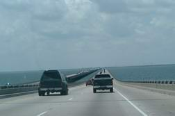
Но вот, кажется, мы медленно, но верно, въезжаем в Хьюстон. Внушительными размерами впечатляют
огромные промышленные массивы: заводы, комбинаты, не знаю уж, что там. Постепенно
пейзажи сменяются на более городские. Даун-таун с торчащими небоскребами виднеется где-то вдали,
наша навигационная система указала нам более короткий путь по огибающему хайвею.
Здоровенный город, нечего сказать.
Наши родственники проживают в научном районе, правильнее сказать, в районе, где сосредоточены все
научно-исследовательские институты. Машины ведь у них нет еще, вот и поселились
они поближе к работе. Артем ездит трудиться на велосипеде, Ольга пользуется услугами автобусов.
Позднее, когда мы более пристально взглянули на Хьюстон, то поняли, что сей район,
пожалуй, является наилучшим местом для проживания. Относительно тихий, культурный, зеленый и
красивый. Наряду с институтами там расположено большинство музеев, парков, фонтанов
и иных достопримечательностей.
На место мы прибыли немного раньше, чем обещали Ольге по телефону. Девченка, не подозревавшая о
нашем скором прибытии, спокойненько себе занималась в джиме, поэтому дома никого
не было, и, соответственно, некому было открыть для нас ворота.
Дело в том, что в южных штатах распространены так называемые жилые комплексы, в которых люди рентуют
апартаменты. Это не одно большое здание с квартирами, как обычно бывает у нас
в Торонто, а множество отдельно стоящих 2-хэтажных домиков, квартиры на 4 каждый. Весь комплекс
обнесен забором, в котором есть ворота, автоматически открывающиеся только для
жильцов. Гости же должны на специальном апарате набрать код хозяев, и последние каким-то образом
подают воротам сигнал открыться. Но все эти американские секъюритарные меры, -
на самом деле, полная фигня. Поэтому нам не составило труда тут же нырнуть внутрь комплекса вслед за
одной из хозяйских тачек. На землю спускалась темень, поэтому мы не стали
рыскать по всему комплексу в поисках нужного дома, а сразу же осели на ближайшем паркинге, наговорив
родственничкам на автоответчик, что мы де уже тут.
Возвращаясь из тренажерного зала (который, кстати, находится прямо на территории комплекса, равно
как и бассейн), Ольга завидела незнакомую синюю машину с подозрительно
знакомым номером "DPAKOH", из форточек которой по обе стороны торчали босые ноги. Оказалось, что
незнамо-негадано нам удалось припарковаться прямо у их входа в дом. Наконец-то я
встретила мою дорогую сестричку, которая совсем и не изменилась за прошедшие 3 года! Словно вчера
виделись.
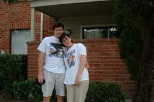
Апартаменты у Ольги с Артемом весьма приятные. Классно, что в прачечную не надо ходить. Прямо на
балконе стоят стиральная и сушильная машины. На кухне же имеется посудомоечная
машина и уничтожитель мусора в раковине. Да, в наших с Андрюшей апартаментах такой роскоши не
наблюдалось. А во всем остальном у них абсолютно такая же система рентования жилья,
как и у нас, разве что администрация более ленивая. Оказалось, что буквально перед Ольгиным приездом
их соседи по дому (вход напротив) пострадали от вторжения в покои... трака.
Поздним вечером хозяйка настойчиво призывала супруга улечься спать. Муженьку, напротив, удалось
уговорить свою вторую половину еще немного посидеть в зале перед телевизором.
Вы легко представите, как женщина была ему благодарна, потому что в следующую минуту прямо в их
спальню, легко проломив фанерную стену, въехал непрошенный гость на глыбоподобном
транспорте. Водитель, видно, был пьян, не справился с управлением и с размаху вписался в дом.
Администрация временно прикрыла зияющее отверстие с внешней стороны жилкомплекса
грудой фанерных пластов и целую неделю раскачивалась, пока не залатала нежеланный вход в спальню
мирных жителей.
Вообще, если вы полагаете, что в Техасе проживают отчаянно быстрые ковбои, то сильно ошибаетесь.
Непрерывно палящее солнце до такой степени распарило мозги местных жителей, что они
не то что соображают медленно, они и двигаются словно мухи. Ну где это видано, чтобы в Торонто,
например, машины выстраивались перед светофором гуськом в одну линию, если рядом
находится совершенно пустая полоса. Канадский водитель, как только видит свободную дырочку, в
мгновение ока прыгает туда, причем чем быстрее, тем лучше, ибо свято место пусто не
бывает. Хьюстоновским автомобилистам так быстро реагировать не дано, да и навряд ли они загружаются
такими проблемами вообще. Еду себе по одной полосе, да и еду. Когда-нибудь да
прибуду на место. И так, видно, рассуждают все, стадом тащась по одной колее. Такое ощущение, что
торопливый ритм нашего бурного времени совершенно не коснулся техасских ковбоев.
Самые крутые пацаны, "быстрые, смелые, ловкие", рассекают не иначе как на траках-пикапах, не забывая
при этом натянуть на голову вестерновскую традиционную шляпу и открыть окно
(подобного рода машины не всегда оснащены кондиционерными устройствами). Сей транспорт катит у них
чуть ли не за спортивную тачку. Вэнов нет вообще, зато траков пруд пруди.
Прикольно, что чем дальше продвигаешься на север, чем ближе к Канаде, тем траков все меньше, а вэнов
все больше. Много седанов (обыкновенных машин), но все они составляют
наибольший процент сонливых, медленных тачек. Настоящие ковбои до подобных машин не опускаются, -
только траки. Наблюдается еще пара интересных закономерностей: китайцы никогда
не водят траки (ну какой из китайца ковбой), а на мерсах в Хьюстоне ездят в основном черные.
Кстати, по словам наших родственников, в Хьюстоне имеет место неслабая дескриминация белого
населения. Я просто диву далась, послушав их. Стоит обратиться к черным за каким-либо
сервисом, так они словно ведро грязи на тебя выливают, оказывая не услуги, а снисхождение. Смотрят
мимо, не замечая тебя, не улыбаются, ни здрасьте, ни до свиданья. Всем видом
своим показывают: провалился бы ты скорей отсюда. Как я уже говорила, у Ольги с Артемом нет машины,
поэтому различные сервисные пункты, как-то: сделать фотографию, документы и
пр., - они выбирают как можно поближе к дому, не рассматривая, черные там работают или белые, - тем
и платятся за оскорбления. Жуть! У нас в Торонто, если ты хотя бы даже
почувствовал какую-то неприязнь к себе как к рассовому классу, можешь смело обращаться в суд, и суд
будет разбираться с рассистами по полной программе. В Техасе же несчастный
белый лишь риторически вопросит Всевышнего "А судьи кто?" и уныло побредет себе дальше, не особо
утруждая себя в поисках ответов на некогда поставившие человечаство в тупик
вопросы Герцена и Чернышевского.
Не к месту будет сказано, но меня лично всегда ставил в тупик сам факт того, что сии "писатели",
вопреки полному отсутствию писательского дара и таланта, умудрились вознестись
так высоко, что проникли в школьную программу (во всяком случае, моего времени), в то время как
масса по-истине прекрасных художественных произведений осталась за дверями учебных
заведений эпохи социализма. Интересно, каких сумасшедших планировало воспитать наше гуманное
общество, вселяя в неокрепшее сознание бедных школьников кошмарные сны пресловутой
Веры Павловны? А каким, скажите, образом должны были влиять на чувствительные натуры извращенческие
"подвиги" товарища Рахметова? Как не стыдно признаться, но я в свои годы
честно попыталась не сомкнуть глаз в течение 15-ти суток. Когда мне это все-таки не удалось, то в
качестве ночного лежбища я избрала не иначе как голый, ни чем не прикрытый,
пол, - благо, не оставалось уже сил подложить под себя гвозди. Когда родители заглянули в мою
комнату пожелать чаду спокойной ночи, то всерьез озаботились психическим состоянием
дочурки. Не знаю,.. уж насколько я зачитывалась обожаемым мною Достоевским, сколько вечеров
посвятила книгам непревзойденного Карлоса Кастанеды, но так далеко моя крыша больше
никогда в жизни не съезжала. Ну да ладно, это было отступление. Читатель, надеюсь, простит меня за
стиль написания. "Что делать?" - я как чукча, что вижу, то пою. Растекаясь
мыслями по древу, никак не могу заставить себя писать по четку выверенному плану. Но, видит Бог, на
звание писателя я не претендую и в классики попасть не стремлюсь, - стало
быть, мне простительно.
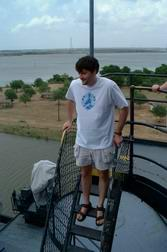
Артем поведал нам историю, как по ошибке занесло его в черный магазин. В Хьюстоне есть сеть хороших
супермаркетов под названием "Крегер". В то же время созвучное наименование
"Крюгер" носит некий магазин для чернокожего населения. Как-то проезжая мимо оного строения на
неизменном велосипеде, Артем благополучно перепутал в мозгу названия и решил
произвесть небольшой шопинг. Едва вошел внутрь, как сотни глаз ошалело уставились на него. Все
вокруг были черные. И только он один, как белая ворона.
- Как назло, на мне еще были сияющие белизной футболка и носки.
Надо сказать, Артем наш далеко не робкого десятка и впечатление производит солидное. Еще на
полголовы выше Андрюхи, он смело может похвастаться накаченной мускулатурой и
"октябрьским" (есть в Новосибирске такой район... - "Октябрьский") детством, когда пацаны одной
улицы смело разукрашивали физиономии сверстникам другой. В "Крюгере" же он
почувствовал себя белоснежкой среди массы... нет, не гномов, но здоровых кабанов.
- Как-то неловко было сразу же покидать заведение, и я решил немного пройтись вдоль полок с
товарами. - Да, наш брат, напротив, сразу думает о том, как бы не обидеть чернокожих
поспешным исчезновением из их магазина, как бы не углядели в этом поступке дескриминацию.
Во все время прогулки меж рядов спину Артема сверлили недобрые взгляды владельцев широких штанин.
- Но как-то неловко было уходить, ничего не купивши. И я взял йогурт.
Обыватели явно не поняли благородных порывов Артема, наоборот, судя по всему, расценили все это как
верх наглости. Мало того, что парень имел хамство войти в их магазин, мало того,
что он вырядился в белые одежды, так еще и купил... йогурт. Разбитная кассирша свирепо взглянула на
Артема и без тени смущения выложила:
- Что #$@#%$ твоя белая #$@^%# задница здесь делает?
- Вот, йогурт покупаю, - ответил Артем, выражая на своем лице якобы полное непонимание криминала
ситуации.
- Плати #$#%# за свой #@$%$# йогурт и уноси #@$%^# отсюда свою #^&# белую жопу!
От радости, что ногами бить не стали, Артем по-быстрому оседлал свой велосипед и в момент
ретировался.
Вообще безобразие! Черные посещают все подряд магазины, и никто даже в мыслях не держит чего либо
предосудительного на сей счет. Почему ж белым дозволено бывать не всюду, где
хотят? Да, доборолись против рассового угнетения. Если так дальше пойдет, так у нас в Канаде
пьянчужки-индейцы возьмут бразды правления в свои руки. Перед ними же здесь так все
виноваты...
Впрочем, белые в Хьюстоне тоже не слишком приветливы. Ольга до сих пор поражается, все время твердя,
что в Европе люди не такие. Конечно, не такие. И у нас в Торонто не такие.
Если что-то спросишь у человека на улице, он всячески старается тебе помочь. Не зная местонахождения
какого-либо объекта, он вместе с тобой пытается выяснить адрес, а коли совсем
уж ничего путнего подсказать не в силах, то долго и искренне извиняется. У техасцев на все один
ответ "Не знаю". Если даже знают, ведь это ж надо будет объяснять, языком шевелить,
а так лениво... Не все, разумеется, такие. Мир не без добрых людей, но общая масса народа особым
дружелюбием не отличается.
Ну да ладно, что-то я все о грустном. Пора и о самом Хьюстоне что-то рассказать. Как выяснилось, ни
Ольга, ни Артем почти ничегошеньки о городе не знают. Ольга здесь ровно с
неделю. Пока аклиматизировалась, потом гуляла вокруг да около дома, переговаривалась со своим
профессором по телефону. Правда, в даун-тауне побывать успела. А Артем - маньяк
до работы. С утра до ночи проводит генетические исследования в своей лаборатории, забегая туда даже
по выходным. Больше чем полгода он прожил в своих апартаментах один-одинешенек,
и без жены ему не в кайф было где-то разъезжать и изучать местные достопримечательности. Мужчины
вообще странный народ. Я помню, Андрюша мой, когда ездил еще из Новосиба в
командировку в Питер, имел там массу свободного времени. Когда же я впоследствии донимала его
расспросами, что де видел да где был, он держался, как партизан. Дескать, никуда
не ходил, так только по улицам гулял. Куда я, мол, без тебя пойду? Мне одному не интересно всюду
шариться... Какое-то стадное иной раз чувство давлеет над мужчинами. Без стада
никуда, ни ногой.
В общем, на следующий день мы втроем внедрились в Субару (Андрей, Ольга и я) и отправились в
даун-таун на разведку. Как ни хотелось мне писать о грустном, но даун-таун, честно
говоря, не впечатлил нас красотой. Раскопано все подчистую, словно Мамай прошел. Тут и там
экскаваторы, подъемные краны, большинство дорог перекрыто (потому что перерыто), а на
тех, что остались, выделено по одной полосе для проезда. Не знаю, всегда ли там проводится столь
массовый ремонт, или время неудачно совпало с нашим визитом, но факт остается
фактом. Помню, когда на второй или третий день нам позвонила мама из Новокузнецка и спросила, как я
нахожу Хьюстон, я ответила:
- Помнишь, вы с папой приезжали к месту в Торонто, где я работаю. Мы еще походили всюду, погуляли,
на лавочке посидели, суши поели?
- Конечно, помню.
- Помнишь, ты еще восхищенно сказала: да, Наташа, в красивом же месте ты работаешь!
- Да, конечно! - воодушевилась мама.
- Так вот совсем не похоже.
Ольга так и сползла на пол от смеха.
Есть, разумеется, в даун-тауне красивые парки с фонтанами. Да и строения сами по себе соответствуют
облику большого, известного города. Но общее впечатление... Позже, правда,
когда мы уже давно покинули Хьюстон, а Ольга, как заведенная, продолжала исследовать
достопримечательности, она нашла много нового, интересного и по-истине красивого (даже прислала
нам фотографии). Например, фонтан, внутри которого ты можешь стоять, полностью окруженный сплошной
стеной воды, также фонтан-лестницу, похожий на железноводскую, да и множество
других мест. Удивительно красивые пейзажи в ап-тауне, - так же страстно заверяла Ольга. Кто ж
виноват, что мы приехали к ним в гости так рано?
Первым делом мы веселою троицей зашли в магазин и затарились шортами и майками, потому что в другой
одежде при такой жаре рассекать трудно. Потом пошли в туристическое агентство,
где добрые тетеньки с громадными перстнями на руках популярно рассказали нам, какие культурные и не
очень места обязательно стоит посетить и как до них добраться. С кучей карт,
брошюр и листовок мы покатились домой все это дело изучать. Начать осмотр окрестностей планировали
со следующего дня, но Андрюше нетерпелось куда-либо поехать уже сегодня, и мы
с Ольгой, не долго споря, подхватили предложение.
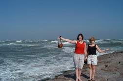
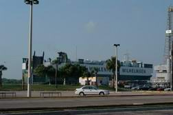
Рванули в Гальвестон, приморский городишко. Путь туда занимает минут 40, зато настоящий океан
открывается взору. Еще немного штормило, - красота. Мы поскакали по каменьям на самый
мыс (Andrew: не мыс это был, а длинный-предлинный каменный причал-волнолом), дабы
сфотографироваться, и бурная соленая волна несколько раз окатила нас с ног до головы. Запашок там,
правда, стоял не из приятных (Andrew: гниюшие водоросли, знаете-ли, благоухают :), посему еще
немного повосхищаясь видом бушующей воды, мы пошли поглядеть на сам городок. Невеликий
ростом и шириной, с небольшими зданиями, он навевал романтические настроения, и мы заглянули в
ресторанчик, выполненный в стиле корабля, искушать мороженого. Поездка в Гальвестон
была чисто разведывательной, много времени мы там не провели, тем более, что Ольга все время
переживала, что Артем там работает, а она тут развлекается.
Позже Ольга звонила нам в Торонто и сообщала об очередном наводнении, разразившемся в Хьюстоне. Сам
город на сей раз не сильно пострадал, а вот в Гальвестоне воды было в среднем
не ниже, чем по колено.
Без Артема развлекаться Ольга явно не желала, усиленно взывая нас не заострять на этом внимания, а
проводить отпуск, как нам хочется:
- Вы ведь всего на недельку приехали, а мы с Артемом еще успеем насмотреться.
Мы с Андрюшей, в свою очередь, хотели, чтобы всем было хорошо, поэтому основные мероприятия наметили
на выходные, когда Артем будет свободен, а в будние дни слонялись где-нибудь
вблизи. Ездили за продуктами, приводя Ольгу каждый раз в ужас выгружаемой из багажника горой
алкоголя. Возили сестренку по разным инстанциям оформлять ей документы для работы.
Шарились по научному центру, забрели даже в какой-то музей. В упор не помню, как он назывался и что
мы там созерцали, помню только, что купили в гифт-шопе красиво сшитую блестящую
ящерку себе на память и маленького заводного роботика на 4-х ножках для наших друзей Плюшко, с
удовольствием согласившихся пригреть кота Гэндальфа на время отсутствия хозяев.
В один из обеденных перерывов Артем сводил нас в совершенно чудное место покушать. Покушать - это
слишком мягко сказано, ибо порцайки там - ого-го! Учреждение сделано по типу
древней вестерновской таверны: все из дерева, массивные деревянные столы, лавки, в отдельной бочке
прохлаждаются бутылки пива и вина, а из пищи дают либо стэйк, либо курицу. Я
с некоторых пор предпочитаю мясо не кушать, в основном овощи и рыбу, но если ни того, ни другого
нет, то могу съесть птицу. Птицу мне и дали. Вернее, полптицы, полкурицы...
При этом у остальных членов нашей дружной компании на тарелках отдыхали чуть ли не по половине
говяжьей ноги (Andrew: как сейчас помню - блюдо называлось незатейливо - Meat Plate.
То есть просто гора мяса и немного гарнира, но вкуснятина!!!). Понятно, что после такого обеда
возникает лишь одно желание - лечь поспать,.. как говаривает моя мама, минут 600 на
каждый глаз. Что мы все, исключая трудолюбивого Артема, и сделали.
В другой вечер, уже после благополучного изничтоженного вкусно приготовленного Ольгой ужина Артем
предложил поехать в превосходное, согласно его хвалебным отзывам, мексиканское
кафе-мороженое. Я мигом помчалась переодеваться, вспомнив, что накануне поездки в Хьюстон прикупила
некую одежду, которая, по моим представлениям, должна очень соответствовать
южному образу жизни и уж тем более идеально сидеть в данной ситуации. Через 5 минут я вышла на
всеобщее обозрение. Что-то обсуждавшая троица разом примолкла и после парусекундного
остолбенения разразилась истерическим хохотом... А что тут такого? На ногах у меня были облегающие,
расклешенные книзу брюки яркой желто-оранжево-черной окраски, а бюст украшал
эластичный топик с рюшами и огромным декольте. Ну хоть сейчас Макарену пляши.
- Снимай немедленно, - простонала Ольга, - мы так с тобою не поедем.
"Еще кто с кем не поедет," - пронеслись в голове моей злобные мысли.
- Вот мексы удивятся, где таких девок сняли, - утирая от слез глаза, пошутил Артем.
Ничего не понимая, я опять пошла переодеваться. Правда, муженек, несколько уже попривыкший ко мне за
годы совместного проживания, пытался было остановить меня, заверив, что ему
лично мое красочное одеяние пришлось по душе, но было поздно.
- Если по душе, так нечего было и ржать со всеми, - отрезала я.
Так больше я и не наряжалась ни разу в свой мексиканский костюм. Ладно, следующим летом в Торонто
буду носить. Здесь никто ничему не удивляется.
Прикольно то, что после посещения этого кафе мы с Ольгой начали ржать, почти не прерываясь. То ли мы
вконец осоловели от лакомства, то ли мексиканцы добавили в мороженое
что-либо драгосодержащее, но результат налицо: смех вызывали не то что анектоды, но всякие жесты,
слова, какие-либо упоминания и самые что ни на есть серьезные рассуждения.
Кстати, именно в тот вечер и позвонила нам мама.
- То ли вы пьяные? - недоумевали родители.
- Да нет, просто смешно. - закатывались от хохота дочурки, объевшись мороженого.
...И все-таки один раз мы не утерпели и в будний день понеслись далеко за окраины Хьюстона, в
местность, где уже больше половины века стоит у причала большущий battle-ship -
военный корабль. Корабль сей славится длинной историей, а главное, тем что это единственное
техасское судно, не затонувшее за период мировых войн (Andrew: А участвовало оно в двух
мировых войнах). В наши дни оно представляет собой музей.
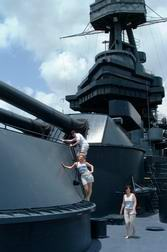
Мы потратили почти 2 часа, если не больше, пока все не облазили, не обсмотрели и не
обфотографировали. Погарцевали на всех
пушках, а их там массы: и на главной палубе, и на верхних палубках-мостиках, куда ведут длинные
лестницы, и из окошек торчат. Примерились ко всем пулеметам. И, главное, обследовали
все "подводные" этажи, где располагаются столовая, госпиталь, операционная, парикмахерская, туалеты,
зал заседаний и множество других больших и маленьких комнат.
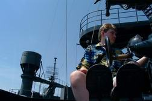
Поразили спальные
места. Оказывается, многоярусные кроватки, на которых спали морячки, такие коротенькие! Положи туда
Андрюшу, у него бы просто свисали колени, из чего мой высокоростный длинноногий
муж заключил, что во флоте ему, наверное, было бы служить трудновато. Да и на спусках в люки надо
остерегаться, дабы не раскроить черепушку, хотя устроители музея справедливо
усмотрели потенциальную опасность и обили края люков поролоном. У лейтенантов, кстати, кровати
немножко подлиннее и располагаются оные в более уютных закоулках.
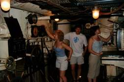
На дне корабля мы обнаружили сам двигатель (хотя было бы странно, если б мы его там не обнаружили) и
кучи разнообразных труб. Пробирались там скрючившись на полусогнутых ногах, но
покорили все до единого участочки. На каблуках, правда, было не очень удобно, особенно ходить по
железным решеткам. Поэтому, когда мы ездили на battle-ship вторично, прихватив Ольгу
с Артемом, я уже обрядилась в обувь попроще. А еще, когда мы плутали в самых нижних отсеках, я очень
боялась, что вот-вот откуда-нибудь выпрыгнет крыса. Но, видно, все крысы убежали
с корабля еще в военные времена.
В сувенирном магазине, уже на берегу, мы отхватили для нашего московского племянничка славную
курточку, типа летную. Всюду понаклеены эмблемы американских военных самолетов, а
кнопочки сделаны в виде самолетиков. Короче, обладатель подарка должен был выглядеть, как своего
рода мини-летчик. Позже Андрюшина сестра Инна писала, что ейный муж очень долго и
сосредоточенно разглядывал сынишкину одежку, после чего мечтательно произнес: "Интересно, а для
взрослых такие курточки бывают?"
В конце недели мы все дружно отправились в некий городишко Кемма, который тоже приморский, как и
Гальвестон, но в котором, на мой взгляд, все вокруг гораздо веселее. Может, это
просто иллюзия. Ведь в Гальвестоне мы были посередине рабочего дня, а там - в пятницу вечером. Массы
народа вальяжно расхаживали как по пристани, так и внутри самого городка.
Частные дома, которые мы миновали, двигаясь от стоянки к центру всеобщего веселья, едва заметны на
фоне буйной растительности садов: раскидистых цветущих деревьев, кипарисов,
магнолий, пальм, цветочных клумб разнообразной цветовой гаммы. А фоном всему этому великолепию
служит изменчивый в своем окрасе океан. Сливается ли со сказочно голубым небом,
подчеркивает ли горизонт зеленоватыми аква-тонами, живописует ли бурную волну бежевым мазком,
отражает ли заходящее фиолетово-оранжевое солнце, он неизменно прекрасен. Красота -
единственное, что в океане неизменно...
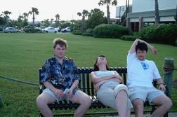
В городке неописуемое множество ресторанов, но, очевидно, людей намного больше, ибо в какой только
мы ресторан не торкались, для нас всюду резервировали места на час позже. Жаль,
что мы отказались записаться в самом первом ресторане. Я его выбрала лично (предварительно пролистав
данную в туристическом агентстве брошюру) и всех туда потащила. Называется он
"Аквариум", причем вполне оправдывает свое имя, потому что стены в нем действительно стеклянные, с
водой и подсветкой, а за стенами… плавают рыбы.
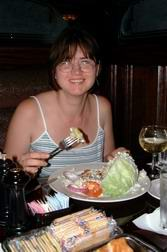К сожалению, нам
удалось лицезреть
только аквариумный холл, ведущий куда-то вверх, а как выглядит чудо-ресторан внутри, подсказывают
лишь фото-картинки. Много людей ожидали своей очереди, но мы честно-откровенно
подумали, что штурму подвергся только "Аквариум", как самый необычный и самый красивый ресторан,
наивно предположив, что в других кабаках проблем с местами не будет. Как бы не так!
Нас всюду "откладывали" на час, но наши озверевшие с голодухи мужички резко поумнели и записались
всюду, где могли.
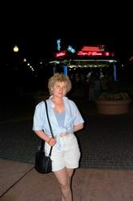
И только "Аквариум", самый красивый "Аквариум" беспощадно разбил
наши сердца, по нашей же глупости, ибо после выхода из десятого по счету ресторана мы как раз бы уже
поспевали в первый. Вообще-то никто кроме меня так особенно не страдал, а мне
просто очень хотелось побывать внутри "водоема". В конце концов всех нас накормили и напоили в
достаточно приятном месте, и мы вывалили на уже вечерне-сияющую улицу обозревать, где
чего происходит.
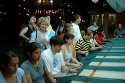
На площади мелькало много разных аттракционов. Мы же не преминули поучаствовать. Я и Андрюша катали
какие-то дурацкие шарики в дурацкие лунки, в результате чего выиграли большого
мягкого дельфина, хотя наши родственнички и подтрунивали над нами, заверяя, что кроме нас, в игре
принимали участие одни только детки. А Артем хотел "выбить" для Ольги мишку, но
что-то не клеилось. Надо было действительно выбить. Размахнуться попуще огромадным молотком и
шарахнуть по некоему чувствительному к ударам пню. Если огонек на башне-шкале долетит
до самого верха, значит, ударил почетно, - забирай игрушку. Но в чем-то был подвох. Я думаю, секрет
крылся в определенной точке пенька.
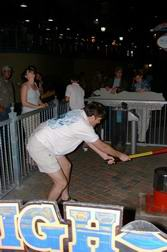
Артем ничего не добился с 3-х попыток, а
какая-то хрупкая тетенька вломила до высшей точки с первого раза. Артем глазам своим не поверил:
"Она что? Сильнее меня что ли?" Пошел еще раз, - опять ничего... Какая-то маленькая
девочка попросила маму выиграть ей мишутку. Мама как ни старалась, ничего не получила. Тогда
доченька отправилась на подвиги сама. Забавно было смотреть, как бедную девчушку
уносило вслед за молотком. Но управляющий аттракционом, видно, сжалился и выдал девке игрушку за
старания и настырность. Ольга же наша осталась без мишки. Но не беда, - значит,
будет им причина опять туда съездить. Зато у нас над кроватью висит теперь память... о наших дружных
прогулках под южной луной...
Наш Гэндальф, правда, нашел мягкому дельфину свое собственное применение. Когда возникает у него
желание вздремнуть на нашей койке где-нибудь посреди дня, а меня или Андрюши рядом,
естественно, нет, он скидывает дельфинчика со спинки кровати и прикладывается ему под бочок. Все не
один...
И вот наконец в последний день нашего пребывания в Хьюстоне (наутро уезжали) мы осуществили давнюю
Андрюшину мечту, - подались в NASA. Это, кстати, неподалеку от военного корабля.
...Мы, наверное, зря настраивали себя, что увидим там нечто из ряда вон выходящее... Ничего
интересного в том NASA нет, - прямо вам скажу, дорогие друзья. Чтобы попасть в
Космический Центр Управления Полетами, нужно прежде всего купить билеты и зайти в большой прохладный
синеватый холл. На стенах множество фотографий космонавтов, причем Гагарина
мы в упор не нашли. В отдельно стоящих стеклянных параллелепипедах хранятся индивидуальные костюмы
некоторых космонавтов, как правило, уже ушедших из жизни: по причине старости
или несчастного случая. Например, имеются одежды американской учительницы со взорвавшегося
"Челенджера". Из одной стенки торчит нос якобы космического корабля. В него можно с
другой стороны стены войти, посмотреть на аппаратуру, панели управления. Тут же неподалеку на
всеобщем обозрении красуется "астронавтский" сортир. Завидев оный после часового
пути, я совсем перестала интересоваться чем бы то ни было. Благо, в здании имелся туалет и для
простых смертных. На фоне другой стены располагается макет самолетика, в который
люди забираются с целью запечатлеть себя на камеру или фотоаппарат (впрочем, по-английски, это
звучит одинаково). Много еще разной всячины можно обнаружить в том холле: тюбики с
едой, специальные приспособления, оборудования, скафандры для выхода в открытый космос. Опять же
навороченные гифт-шопы. Андрюша прикупил там себе синюю прозрачную кружку на
память с логотипом NASA, и с тех пор пьет только из нее, пренебрегая всеми остальными кружками на
нашей кухне. Если даже все кружки чистые и только насовская грязная, он все равно
выберет последнюю, - как ребенок. Есть в том помещении и небольшой кинотеатр, где показывают всякую
бессюжетную и бессмысленную фигню. В центре холла находится подобие сцены, -
вроде на ней тоже проходят какие-то представления. Имеют место также негромоздкие аттракциончики на
тему: "почувствуй себя космонавтом". Оленька, во всю нашу бытность ездившая в
транспорте с полиэтиленовыми мешочками, сразу же наотрез отказалась в подобных "круговоротах"
участвовать. Да и нас уже поджимали минуты. В общем, для людей предоставлено все, по хьюстоновским
меркам, возможное, чтобы они могли скоротать время в ожидании экскурсии. А экскурсия!.. - это еще
тот фрукт...
Люди! Если я призову вас не посещать той экскурсии, вы ведь все равно не поверите и, влекомые
космической тайной, потянитесь навстречу неизведанному. Я бы лично поперлась,..
вопреки всему и несмотря ни на что. Но коли я уже взялась писать письмо, то заткнуть меня будет
трудно, пока не выложу все. Поэтому терпите...
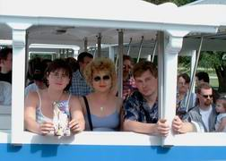
Экскурсия производится на открытом паровозике соединенных одна за другой лавочек. Паровозиком я
обозвала сей транспорт исключительно из-за его длины, а вообще-то движется оно,
как обыкновенный автобус. И едва ты погрузился на сиденье, фиг тебе куда-то деться, оторваться от
общей массы, скрыться в неизвестном направлении или вернуться назад в
кондиционированный холл. Будешь 2 часа бездарно парить мозги. Я даже сейчас думаю, будь то
мероприятие длительностью покороче, до 30-40 минут, было бы куда интересней и
впечатлительней. Но 2 часа!.. В общем, сначала нас минут 10 везли по каким-то полевым дорожкам,
прокатили мимо торчащих ввысь ракет и привезли в некий комплекс, который
состоит из разрозненно стоящих серо-каменных бараков, никакого подобия окошек у коих почему-то не
наблюдалось. Когда возле одного из сараев нас высадили и благополучно загнали
в непрезентабельного вида помещеньице, на ум сразу пришла загадка:
- Без окошек, без дверей полна горница людей!
- Насовский домик.
Сарай, по словам еле видимого и слышимого из-за толпы экскурсовода, служил чему-то складом. Чему
конкретно, уже не помню: то ли приборы какие там хранятся, то ли одежда.
Затем наш гид включил видак и обратил взоры экскурсантов на прикрепленный к стене телевизор. Таким
образом, следующие минут 10 мы дружно пялились в экран, на котором ничего
захватывающего не происходило (Andrew: По легенде, этот сарай должен представлять собой сборочный
цех нового спасательного аппарата для эвакуации людей с орбиты. Рассчитан он
человека на 4, насколько я помню, мелкий совсем, немножко на шатл похож. Но сам ангар скорее похож
на склад рабочих комбинезонов для каких-нибудь строителей. Никогда не поверю,
что там на самом деле могут идти какие-то работы. Выглядело все как гигантская бутафория, да еще и
совершенно не убедительная бутафория).
Та же участь постигла нас в следующем сером бараке. К концу видео-ролика дети откровенно ныли, а
взрослые тупо пялились невидящим взором в телевизор, время от времени
подворачивая ноги (когда долго стоишь на одном месте, волей-неволей начинаешь расшевеливать
онемевшие ступни, - не замечали?).
В третьем домишке счастье нам мало-мальски улыбнулось, - оставив позади ненавистный телек, мы
двинулись по лестнице куда-то на второй этаж. В этом здании типа того что проходят
тренировки космонавтов на тренажерах, в точности соответствующих настоящим космическим установкам.
Большинство "звездных" корабликов - российские: небезызвестные "Заря", "Союз",
"Звезда", еще какие-то. Есть также относительно недавно сконструированная канадскими специалистами
космическая "рука". И множество других кораблей и станций (Andrew: Это вообще
цирк! В зале находятся копии абсолютно всех орбитальных модулей - примерно с дюжину наверное. Из
всей дюжины российских модулей штук 8! Еще пара-тройка модулей американские,
один или два европейских, одна канадская "рука", и... все! Но! При том, что 70% всего хозяйства там
российское, гид про Россию за все 20 минут упомянул вскользь только один раз.
Забавно было наблюдать за реакцией остальных туристов - большинство искренне удивлялось подавляющему
числу российских флагов на модулях :). Только мы все это видели со второго
этажа через стекло. Ни близко подойти, ни толком разглядеть, ни пощупать, ни забраться. Может, мы
уже избалованы тем, что привыкли к "аттракционным" выставкам, музеям и экскурсиям.
Если тебя никуда не пустили, не дали, так сказать, "войти в образ", считай, - день пропал зря. Я
думаю, если б NASA находился в Торонто, например, или Нью-Йорке, оттуда бы
уходить не хотелось. Здесь бы все усилия приложили к тому, чтобы вытряхнуть с туристов как можно
больше денег и в то же время подольше задержать их. Вообще, парадокс: обычно
больше всего времени проводишь там, где с тебя больше тянут. Казино в этом смысле стоит на вершине
сравнения.
Я полагаю, у всех пассажиров нашего паровоза-автобуса сложилось впечатление, что это все камуфляж.
Стали бы так толпы водить, засекреченное оборудование показывать. А еще того
похлеще - просто видиками народ кормить. Короче, если NASA и находится в Хьюстоне, то явно не в том
месте. Или, по всей вероятности, сия полянка с сарайчиками и ракетами, - уже
давно устаревший NASA.
Возле ракет нас, тем не менее, высадили прогуляться... Лучше бы они сделали это вначале пути, когда
все мы еще были свежие и бодрые. А после путешествия на раскаленном воздухе и
полуторачасового пребывания в душных бараках ракеты, как-то потускнев, сдали в своем великолепии.
Почему-то не было уже той прыти и нетерпеливого желания досконально обозреть
могучие космические гиганты со всевозможных ракурсов (Andrew: бродили мы вокруг двух ракет -
одной какой-то совсем маленькой и старинной, и вокруг Сатурна, на котором начинался
полет на Луну). Кто-то разлегся на газончике, в изнеможении протянув конечности; кто-то, чуть ли
не оперевшись об устремленный в небо "звездолет", пригорюнившись, сидел на той
же травке; дети гундосили, прося пить; а остальная толпа, выражая на лицах отсутствие чего бы то ни
было, неприкаянно блуждала вокруг да около, как тень папы Гамлета.
Нет, я, наверное, зря нагнетаю обстановку. В сущности, не так уж плохо все было. Просто долго и
муторно. И свалить никуда нельзя. Местные-то жители привычны к стоящим погодам,
медленнее чем были, уже все равно не станут, а вот вынутые из кондиционированных машин приезжие явно
превращаются в сиганувших через костер Снегурочек. Иными словами, тают.
Хотя мне, честно признаться, в Хьюстоне было хорошо! Я и про болезни-то свои разом позабыла.
Андрюша-бедолага изнывал от жары, правдами и неправдами увиливал от пеших прогулок,
при каждом удобном случае запираясь в прохладной Субаре. А я кайф ловлю! Казалось бы: песчаная
почва, в то же время непомерно влажный из-за близ лежащего океана воздух, не так
далеко раскинувшаяся груда промышленных массивов, в апартаменте ковровое покрытие, давненько не
чищенное по причине отсутствия у Ольги с Артемом пылесоса (благо, они уже приобрели
оный), - а мне, не взирая на все это безобразие, дышится просто отлично. Бывало, вечерком выйду на
крылечко, сижу, наслаждаюсь, слушая голосистые переливы сверчков,.. и в глубине
души недоумеваю, отчего это вдруг 3 моих дорогих товарища то и дело награждают меня недобрым словом
"самоубийца".
...Прощались со слезами на глазах... Напоследок все дружно сфотографировались, взгромоздив штатив
фотоаппарата на крышу Субару, и мы с Андрюшей двинулись в обратный, но уже более
короткий путь.
Маршрут, в сущности, пролегал по тем же самым штатам, за исключением того, что озеро Онтарио мы на
сей раз объехали со тороны Мичигана. Ехали быстро, хорошо, часто меняясь.
(Andrew: Обратный путь был длиной ~2600км, и проделали мы его ровно за два дня.) Подглядев
комментарий Андрюши, спешу уточнить, что ночевали мы на обратном пути всего лишь одну
ночку.
Дороги казались уже знакомыми, стиль выверенным. Так бы и мчаться нам преспокойненько, как вдруг...
Нет, страшного звука, как у Марины с Сашей, слава Богу, не раздалось, но и без
приключения обойтись не удалось.
...День завершал свое существование. Прямо скажем, было уже совсем темно. За рулем сидел Андрюша и
активно призывал доехать до более-менее большого города Нашвил (Nashville) штата
Tennessee. Но его женушка, Ваш покорный слуга, старательно пыталась развести глаза из кучи, куда
оные собрались после непрерывного 5-тичасового вождения. Чего скрывать? Мне очень
хотелось спать. Я устала. Но дело в том, что штурману ночью никак спать нельзя. Нужно непрерывно
травить побасенки, анекдоты, вспоминать прикольные случаи из жизни, - словом, все
делать для того, чтобы водитель не дай Бог не заснул.
У нас даже с Андрюшей есть стандартная игра для данных случаев - в кинофильмы. Родилась она, правда,
как игра в книги. Но мы ее благополучно расширили. Смысл таков. Один человек
загадывает кино или книгу и в ассоциативных чертах кратко это дело описывает. Второй участник задает
вопросы, такие что загадывающий может ответить только да или нет. Иногда,
правда, шедевры угадываются с первого раза. Приведу пример из описаний Андрюши:
- Произведение про дуб.
- "Война и мир", - тут же отвечаю я.
Или:
- Фильм про цветомузыку.
- "Экипаж," - вновь удалось мне молниеносно постичь разгадку.
Помню, когда еще мы с Андрюшей только начали жить вместе, (кстати, где-то в то время мы и придумали
сию игру), то в одну из ночей, когда "все дела сделаны", а спать еще не
хочется, Андрюша загадал мне "классную" книгу:
- Не помню, про что. Не помню, как называется. И уж тем более, не помню, кто автор.
- "Железный поток", - донеслось из ночи.
Андрюша мигом включил рядом стоящий торшер и с превеликим удивлением на лице произнес:
- А как ты догадалась?
Но в тот самый вечер я была не в силах во что бы то ни было играть и настаивала на ночлеге в первом
попавшемся городишке. Андрюша сжалился. К большому сожалению, я не помню,
в каком именно населенном пункте мы сняли номер мотеля "Best Western". В известном месте
"заправившись" съестными припасами, мы благополучно скушали ужин и запили оный чуть
подградусенными ягодными куллерами, после чего Андрюша, расслабившись, улегся на кровати смотреть
телевизор, а я принялась убирать все со стола. Совершенно нечаянно я заприметила
два шевелящихся уса, торчащих из щелочки у входной двери. Через пару секунд не замедлил появиться и
их обладатель - самый обыкновенный таракан.
- Андрюша, таракан! - в ужасе воскликнула я.
Надо заметить, что у меня есть некая особенность организма. Когда я вижу что-либо откровенно
мерзкое, у меня волосы вздымаются дыбом (прямо чувствую, как корни волос встают),
а вся кожа покрывается "гусиными" пупырышками.
- Ну так убей его, - меланхолично ответил Андрюша.
Вооружившись Андрюшиной туфлей, я, безусловно, уничтожила гадкого насекомого. Но настороение мое,
однако, уже было в упадке. Я начала шизофренично оглядываться вокруг себя,
как вдруг на стене, прямо возле моего будущего ложа, увидела еще одного усатого выродка.
- Андрюша, вон еще один ползет!
- Ну ползет и ползет. Мимо себе проползет, - все еще пытаясь рассеять спокойствие, изрек супруг.
- Нет! Мимо он не проползет! Они будут прыгать на нас со стен и ползать в нашей постели! - ужасающим
голосом провопила я. - Я не смогу спать в этом кошмаре!
- Ну надо же?! А как же ты в общаге жила? Там вроде тараканы друг на дружке сидели и друг дружкой
погоняли. А во всех наших съемных квартирах? Что-то ты не слишком шарахалась
от черно-усатых полчищ. Даже умудрялась травить гадов.
Умудрялась. Еле сама осталась жива. Абсолютно честно. Потребовалось внутривенно вкатить 20 кубов
эуфиллина с физраствором, чтобы Наташенька пришла в сознание.
- Я не видела этих тварей уже больше 3-х с половиной лет. Лишь в страшном сне они мне иной раз
являлись. Я искренне надеялась, что больше не увижу их никогда. И потом...
к хорошему быстро привыкаешь...
Но Андрюша уже был целиком и полностью поглощен телевизором.
Я досконально исследовала комнату и обнаружила во всех ее углах дохлых тараканов. Либо номер вообще
не убирали перед нашим прибытием, либо накануне ползучих гадов потравили.
Ни одна из версий не придавала оптимизма, посему я вышла на улицу и прижалась поближе к нашей
машине. Тотчас из-за двери показалась Андрюшина голова:
- Ты что тут делаешь?
- Собираюсь разложиться на ночлег в Субаре.
Отчего-то неимоверно возмущенный, супруг хлопнул дверьми и подался принимать душ.
Я возвернулась восвояси, села на стул и угрюмо уставилась в пол. По полу полз таракан, и Андрюшин
башмак вновь пришел на помощь. Что делать? Я подняла сумки и поставила их на
стул, типа от греха подальше. Не тут-то было. На подлокотничке стульчика я заприметила маленького
таракашку, усатенького сволоченка. Опять пошла в ход мужнина обувь (может,
вам покажется странным, но если бы я прибила негодяя своим босоножечком, то тут же бы скончалась на
месте). Немного погодя, - на втором подлокотнике появляется близнец
предыдущего паразита. ...Это было моей последней каплей. Схватив обе сумки, я сама забегала по
комнате, как бешеный таракан, и, ворвавшись в ванную, истошно заорала:
- Немедленно сваливаем отсюда!!! Здесь даже сумки некуда поставить!
Андрюша, видимо, во глубине души был готов к подобному исходу, потому что спокойно, хоть и скрепя
зубы, произнес:
- Собирай все, что успела распаковать, и поехали.
Запаковывать, слава Богу, было нечего. Я и без того непрерывно переживала, что тараканы найдут в
сумках щели и заберутся туда, наплодя детенышей.
Через пару минут мы уже сидели в машине и переругивались.
- Я говорил тебе, надо было доехать до Нашвилла. Так ты ж сама соизволила поселиться в этом
Тьму-Тараканьске.
- Откуда ж я знала? Я просто устала. Разве я могла предположить, что нас постигнет здесь столь
страшная участь? Ведь на всем протяжении пути ничего подобного с нами не
случалось.
- Главное, представь, каково мне. Накормила, значит, меня, алкоголем напоила. Принял душ,
расслабился, а теперь опять куда-то ехать?
Я бы с радостью предложила свою кандидатуру на водительское место, но, к сожалению, успела с горя
выпить 2 бутылки алкоголесодержащего напитка. Андрей пригубил лишь одну.
Мне оставалось примолкнуть и сопеть в дырочку:
- Ну хоть убей, не могу я находиться в обществе этих гаденышей!
Доехав таким путем до административного пункта, мы поняли, что управляющий мотелем вовсе не
собирается отдавать нам наши деньги, аргументируя тем, что:
- мы провели в номере полтора часа (ну не было нигде тараканов, пока мы ужинали!);
- тараканов у них в мотеле нет (тогда кто это были? приведения что ли?).
Забыв про "междоусобные" распри, мы объединили наши гнев и силу супротив общего врага -
"вестерн-юнионовского" председателя. Побоище, однако, закончилось выигрышем далеко не в
нашу пользу. Пытались звонить в банк, наложить запрет на пэймент. Но банк в ночь выходного дня
почему-то не работал, и мы решили, что разберемся со всем этим делом в понедельник,
и справедливость законно восторжествует.
А в ту ночь ехать пришлось все-таки до Нашвилла. 300 км. По Тенессинской трассе. Причем ночью мне
казалось, что дорога еще более заковыриста, чем когда я ехала в направлении
Хьюстона. От многочисленных резких поворотов за острыми скалами становилось жутковато. В дополнение
к этому я непрерывно чухалась: мне все казалось, что тараканы ползают и по
мне, и в сумках. Когда, прибыв, мы поселились в проверенном отеле Ramada Inn. и зашли в номер,
Андрюша сразу же изрек:
- Проверяй, нет ли здесь тараканов, потому что если я сейчас лягу на кровать, то уже точно до утра
не встану.
Но никаких насекомых, как, впрочем, и везде до этого (за исключением Таракан-вилла), нигде не
наблюдалось. Посему Ваш покорный слуга, беспечное существование которому явно давит
на мозги, поставил перед собой новую задачу - раздобыть воды.
Мы давно уже не потребляем водопроводную воду. По определенным числам к дому подкатывает специальная
машина и выгружает нам на крылечко огромные 18-литровые бутыли с водой
"Cedar Springs", из высокогорных натуральных источников. Эту воду мы пьем (причем даже Гэндальф),
используем ее для супов и варим в ней яйца. В отеле же очень сильно захотелось
пить, а до того, что можно набрать воды из-под крана и прокипятить ее в кофеварке, наш затуманенный
дорОгой разум почему-то не дошел.
Взяв деньгу, я отправилась на поиски бутылочной воды. Отель наш имел очень сложное изгибистое
строение, и я в упор не помнила, где располагается "приемный пункт". Входила в
какие-то многочисленные двери, попадала в тупики, выбиралась обратно. В конце концов плюнула, вышла
из здания совсем и обошла оное по периметру, пока не заметила главный вход.
На входе курил дядечка-охранник. Почему-то он походил на какого-то знаменитого рок-исполнителя.
- Где можно раздобыть водицы?
- Внутри должен быть автомат, зайди, спроси на ресепшене.
Я покорно проникла внутрь и, как было велено, спросила. Мне указали весьма сложный путь. Добравшись
до точки назначения, я обнаружила затемненный бар с музыкой, бильярдом и
кучей народа. Барменша охотно поднесла мне стаканчик воды, налитой, видимо, из крана, потому что
бутылок с водой у них в продаже не оказалось. Я вернулась к дяденьке-охраннику.
Тот, чуть ли не взяв меня за руку, отвел к автомату, находящемуся совсем в другой стороне от бара.
Но на вопрос, как засунуть в машинку бумажную деньгу, он ответа не нашел. В
лобби долго не могли понять, чего я от них хочу, а хотела я всего лишь разменять десятку.
- Зачем?
- Чтобы всунуть монету в автомат и купить бутылку воды.
- А почему ты не можешь впихнуть туда бумажку?
- Не представляю возможным это сделать.
Добрая тетенька сжалилась, и мы вместе с ней отправились к автомату. Совершенно бесхитростно она
сложила бумажку вдвое и всунула ее в "рот" механизированного гиганта, из
которого тут же вылетела бутылка воды и сдача с 10-ти баксов. Уму непостижимо! Возрадовавшись, я
прижала к груди драгоценную покупочку и подалась к стеклянной двери на выход.
То ли стекло было неимоверно чистым, то ли у меня совсем уже крыша съехала к 3-м часам ночи, но я
прямо лобешником вмазалась в закрытую дверь (как в "Невезучих"). Слава Богу,
оставшись при сознании и найдя-таки выход наружу, я вновь доколупалась до охранника:
- Не подскажите, каким путем мне добраться до такого-то номера, так чтобы вышло покороче?
Дяденька, будучи профессионалом, судя по всему, начал меня уже в чем-то подозревать. Шарашется тут
какая-то посреди ночи, никому покоя не дает, лбом двери выносит, не помнит,
где ее номер. Но вида не подал.
- Ты помнишь, где твоя машина стоит?
- Под окном, - ничуть не колеблясь, ответила я.
Решив, что имеет дело с полной идиоткой, дяденька, очень добрый и деликатный, собственнолично
препроводил меня к номеру.
- Ты уверена, что живешь именно тут?
"- Вот это
твоя улица?
- Вот это... - моя улица. А может, не
моя... Не помню точно я."
- Конечно! Данную местность я уже припоминаю, тем более что вот моя машина, да и номер на двери
совпадает с номером на ключе.
Короче, "вот моя деревня, вот мой дом родной", вот иду с охраной по тропе ночной.
Откланившись, охранник сильно далеко не ушел, а бдительно проследил, как я открываю дверь ключом и
вхожу внутрь. Наверное, он подождал там еще немного, на всякий случай готовясь
к тому, что тело "непрошенного ночного гостя" в моем лице может залпом вылетить и обратно. Но номер
без сомнения был мой, потому что на кровати мирно посапывал Андрюша. И вдоволь
напившись водички, я тоже последовала его примеру.
В Торонто нас встретила холодина еще попуще той, что выдалась на наш отъезд. Поскольку мы прибыли
уже почти ночью, то кота поехали забирать только на следующий день. Стоит,
пожалуй, рассказать о том, как мы его собирали в дорогу.
Семейство Плюшко, Саша, Галя и их сын Артем (в своем кругу мы их ласково зовем "Плюшки"), как я уже
говорила, сами проявили инициативу пригреть котика у себя в апартаментах,
пока нам предстояло кататься в Хьюстон.
- Только привезите и все его любимые игрушки, чтобы он чувствовал себя, как дома, - напомнила нам
заботливая Галя. - И лазенку его не забудьте.
В общем, к концу сборов я обнаружила, что Гэндальфийские вещички занимают не больше, не меньше, как
наши пол-зала. Естественно, лазенка, - предмет первой необходимости.
Метр высотой и полметра шириной, она сделана из коврового покрытия и имеет в своем составе
вертикальный столб, полочку с болтающимся шариком, а наверху две склееные широкие
трубы. Гэндальф с остервенением точит о столб когти, из труб лукаво наблюдает за откружающей средой,
а на самом верху дрыхнет. Нет, без лазенки никак нельзя. Туалет егоный
тоже весьма объемистый - огромный ящик с отверстием. Опять же большущая коробка со специальным
песком для того сортира. Мягкий домик с подушечкой... В сумку попадали и любимые
игрушки: прутики с висящими золотинками, ватиновая мышка, светящийся шарик, двигающаяся и мяукающая
кошка Клара, которую мы с Андрюшей подарили Гэндальфу на день рождения, -
когда ребенку исполнился целый год. Консервы, сухой корм, витаминчики, тарелки, зубная щетка с
пастой, расческа, щеточка, полотенце. В общем, когда Андрюша увидел собранную
гору, его чуть инфаркт не хватил.
- Слушай, ты с ума сошла! Мы на двоих на неделю берем с собой гораздо меньше вещей. Давай
уполовинивай багаж немедленно!
Еле удалось убедить муженька, что так надо, что так Гэндальфу будет уютней вдали от дома. Только
сделали нашему небесному созданию маникюр с педикюром (подстригли коготки-с)
и собрались запихивать оное в спецомовскую дорожную сумку, как я обнаружила, что к его попе
прилипли, извиняюсь, какашки, - неудачно сходил в туалет. Пришлось срочно мыть попу
(не везти же его в гости грязнулей), а потом сушить феном, - ведь времени уже было 11 часов вечера.
Наконец-то стаскав все причиндалы в багажник и водрузив Гэндальфа в салон,
мы поехали. На месте позвонили хозяевам, предупредив, что поклажи воз и маленькая тележка, - так что
семья Плюшко в полном составе спустилась вниз встречать "принца Уэльского".
Каждому досталось чего нести.
В апартаментах, однако, Гэндальф очень быстро освоился. Еще бы! - все свое при нем. Опять же ему
нравятся эти люди, посему когда мы заторопились домой, он даже не паниковал,
а вольготно отдыхал на своем постаменте.
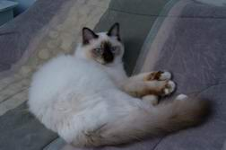
Гэндальф наш - шкодливый парниша. Одно из его любимых занятий, - находить на полу всякие маленькие
штучки (электронные запчасти из кабинета, пробки от молочных тетрапаков,
регулярно забываемые Андрюшей в бэйсменте) и забрасывать оные в свою миску с водой или Анрюшины
ботинки. А потом обратно вынимать запрятанное. Так, недавно Андрюша возвернулся
домой с тусклым выражением на лице, жалуясь, что весь день что-то мешало ходить. При ближайшем
рассмотрении оказалось, что весь день в его туфле пролежала затычка от молока.
- Ах ты пушистая сволочь! - грозно раздалось в адрес Гэндальфа. Однако, в голосе Андрюши никакого
гнева не слышалось, а на лице скорее присутствовала улыбка. Если Вы увидите
нашего Гэндальфа, то сразу поймете, что по-настоящему на животинку злиться нельзя.
Поэтому перед отходом я предупредила Галю, за чем особенно нужно следить, куда его не пускать и что
где не оставлять. Особенно я обратила ее внимание на то, что туалетную бумагу
нужно держать где-нибудь повыше, а то если доберется, - раздерет в пух и прах.
Каково же было наше удивление по возвращении, когда Галя с Сашей сказали, что не могли нарадоваться
на Гэндальфа. Оказывается, в гостях он вел себя крайне прилично: ничего
не драл, не царапал и не разбивал. А про туалетную бумагу они помнили, но что-то никак не доходили
руки ее спрятать. Да и не было надобности, ведь Гэндальф изображал из себя
примерного мальчика-одуванчика. Галя его так и прозвала: "Одуванчик - толстые щечки". Кот наш,
признаться, совсем не толстый, но из-за повышенной пушистости кажется огромной
мягкой, к тому же живой игрушкой.
10-ти минут не прошло с момента нашего появления в Плюшкинской квартире (по возвращении из
Хьюстона), как я услышала знакомый подозрительный звук, раздающийся из ванной
комнаты. Зайдя в последнюю, я застала Гэндальфа за любимым делом: стоя на задних конечностях, он с
вожделением драл передними лапками туалетную бумагу.
- Я ж говорила вам! Уберите подальше мягкий рулончик!
- Не поверишь, - ответили Саша с Галей, - за все полторы недели он ни разу не притронулся к
туалетной бумаге.
Но стоило нам, хозяевам, появиться, как он тут же, зараза, осмелел, совсем забыв, что все еще
находится в гостях. Вот ведь хитрый! Хитрюля страшный! Обычно напакостив и заслышав
грозные шаги, он тут же отбегает куда подальше от места преступления, принимает
вальяжно-невозмутимую позу и невинно взирает на тебя честными голубыми глазами:
- Что-то случилось? Я, как видишь, здесь совершенно ни при чем. Вот лежу себе, расслабляюсь... "Еще
и вышивать могу..."
И рука не подымается наказать шалунишку. Не пойман - не вор. По этому принципу и живем. Поймать
нашего котауси "за делом" крайне трудно. Он прекрасно знает, когда и какое
место в доме никем не контролируется, прекрасно знает мою реакцию на его поступки и Андрюшину,
знает, кого чем взять и как разжалобить. Он и мордочку-то строит иной раз,
прямо как лисичка.
Помню, пошла я выливать в унитаз остатки супа. Гэндальф увязался за мной. Запрыгнул в раковину,
разлегся там, как фон-барон, свесив вниз лапку, и лежит. Ну и бог с тобой,
лежи пока, все равно через 30 секунд мне сюда опять возвращаться, выбрасывать остатки каши или еще
чего. Через эти самые 30 секунд картина в туалете была в точности единтичной:
Гэндальф пребывал ровно в той же позе в раковине, - исключение составляли лишь разбросанные по всему
сортиру мелкие кусочки туалетной бумаги. Когда успел? И главное, когда
успел запрыгнуть назад, принять то же положение и состроить невозмутимый взор?!! Ну и что делать
прикажете? Глядя в бездонно голубые честные глаза, никогда не поверишь, что это
сделал он. - ...Окей, не хай это сделала я, так уж и быть, или неопознанное превидение...
А недавно он полночи не давал мне спать, развлекаясь с какими-то телефонными штырьками. В груду
всякого борохла возле кабинетного кресла Андрюша зачем-то положил 4 этих
штучки (это наутро он мне сказал, что их было 4). Заслышав громыхающий звук на керамических плитках
прихожей, я каждый раз спускалась вниз, отыскивала на полу штырек
(Гэндальф при этом якобы мирно отдыхал на мягкой лестнице, не имея к происходящему ни малейшего
отношения), складывала его на недосягаемую до разбойника полку и вновь
отправлялась в койку. Только я выключала ночник, как озорник несся в кабинет, брал следующий штырь и
утаскивал оный вниз, на шумный пол, пытаясь забросить в просторный
Андрюшин ботинок. ...И так 4 раза. Не стоит скрывать, что изымая игрушку в последний раз, в 3 часа
ночи, я еле удержалась, чтоб не придушить спокойно храпящего муженька.
Ведь это он все разбрасывает где не попадя. А второй "мужикашка" благополучно подбирает. Павбывав бы
обоих!!!
В общем процедура возвращения Гэндальфа "на Родину" мало чем отличалась от нашего с ним расставания.
Процессия в составе пяти человек (двое нас и трое "плюшек") с сумками и
ящиками препровождала поданного королевства Мумба-Юмба до кареты,.. э... пардон, машины.
Кстати, разборки с "Best Western" закончились тем, что деньги они нам возвращать не возжелали, но
вместо этого прислали купоны на ту же самую сумму, которые мы впоследствии
благополучно использовали в Квебек-Сити. Но об этом будет в следующем письме. А в завершении данного
послания мне бы хотелось чуток осветить нашу поездку в некий рессорт.
Как известно, в конце мая у нас проходит праздник по случаю дня рождения королевы Виктории,
сопровождаемый тремя выходными днями. На лонг-викенды очень сложно заказать
места в какие бы то ни было ресорты (на природе, на озерах), поэтому люди, как правило, суетятся
месяца за 2-3 раньше. Вот и мы с друзьями подсуетились. Кто же знал, что
накануне лета к нам заглянет грозная зима?
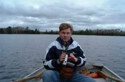
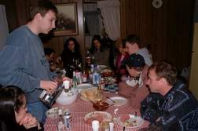
4 дня в рессорте походили на борьбу за выживание. Мало того, что на улице выше +7 не поднималось,
так еще и отопительная система внутри котеджей дышала наладом. Плюс к этому,
почти что не было горячей воды. Считай, это первый рессорт за все время пребывания в Канаде, где мы
так накололись. Тем более в столь зверскую погоду. Нахлобучивая на себя
33 одежки, мы непрерывно искали пути, чтоб согреться: разжигали костер, пили красное вино, водку,
собирались большой толпой (всего нас ездило 18 человек) в одном котедже, дабы
надышать тепла.
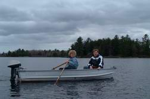
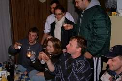
Иногда, правда, нам хотелось разнообразий, и мы ездили на рыбалку. Представляете картину? На дворе
+6, с неба сыплется снежок, а мы сидим в лодке, рыбачим. Кайф!
Впрочем, вечера у нас разнообразием совсем не отличались. Прям как в "Особенностях национальной
охоты": что ни вечер, то "черный ворон ветку клонит"... Зато все мы были крайне
горды, вернувшись до дому живыми!
Ну а продолжения ждите в следующем письме...
Следующее
письмо- Письмо
22
|